CFS App 共通版 完全操作説明書
初めてCFS Appを使う人が、起動、プロジェクト作成、各マスター登録、Room Type作成、CFS確認、Revision保存、共有、出力までを一通り完了できるように、現在の全機能を省略せず整理した説明書です。
1. 共通版Zipの内容
共通版Zipは、CFS Appを新規導入するためのクリーンな配布物です。アプリ本体、起動スクリプト、説明書、共通アイコン、必要な設定例だけを含みます。
| 項目 | 内容 | 用途 |
|---|---|---|
LAUNCH_CFS_APP.vbs | 通常起動用のランチャーです。起動中は小さな待機画面を表示します。 | 利用者は基本的にこれをダブルクリックします。 |
START_CFS_APP.bat | ランチャーから呼ばれる実行本体です。 | Node.js準備、依存関係インストール、ビルド、サーバー起動を行います。 |
CREATE_DESKTOP_SHORTCUT.vbs | デスクトップとスタートメニューに CFS App ショートカットを作ります。 | ショートカットは同梱の public\cfs-app-icon.ico を使います。 |
Manual\index.html | この説明書と同じ内容のHTMLです。 | Zipを受け取った人が最初に開く入口です。 |
.env.example | ローカル利用とSupabase共有の設定例です。 | 必要な場合だけコピーして .env.local を作ります。 |
app、public、scripts | CFS App本体と補助スクリプトです。 | 通常は中身を直接編集しません。 |
data フォルダー、.env.local、Supabase Service Role Key、Microsoft Entraクライアントシークレット、ローカルログ、テスト結果は共通版Zipに入れません。2. 起動とショートカット
- Zipを右クリックして展開します。OneDrive、Teams同期フォルダー、ネットワーク共有の中で直接起動せず、まずPC内の通常フォルダーへ置きます。
Manual\index.htmlを開き、説明書を確認します。- 必要であれば
CREATE_DESKTOP_SHORTCUT.vbsを一度だけ実行します。デスクトップとスタートメニューにCFS Appが作成されます。 LAUNCH_CFS_APP.vbsまたは作成したCFS Appショートカットを起動します。- 初回起動では、Node.js 20以上の確認、アプリ専用Node.jsの準備、
npm ci、npm run buildが自動で行われます。環境により数分かかります。 - 起動中は
Starting CFS Appの待機画面が表示されます。起動が完了すると、CFSアイコン付きのアプリ風ブラウザー画面でhttp://localhost:3014が開きます。
| 起動時の状態 | 意味 | 確認場所 |
|---|---|---|
| Preparing CFS startup. | 起動準備中です。 | artifacts\startup\latest-status.txt |
| Installing CFS dependencies. | 初回のみ依存関係を入れています。 | 最新の start-*.log |
| Building CFS for the first launch. | 初回ビルド中です。 | 最新の start-*.log |
| CFS is ready at http://localhost:3014 | 起動完了です。 | ブラウザーでCFSを操作します。 |
| Port 3014 is already in use | 別のアプリまたは既存CFSが3014番を使用しています。 | 既存CFSを閉じるか、管理者へ確認します。 |
3. 保存方式、共有、権限
ローカル利用
CFS_SHARING_MODE=local または設定なしの場合、プロジェクトとTrashはそのPC内の data フォルダーへ保存されます。別PCへ渡すときはExportとImportを使います。
Supabase共有利用
CFS_SHARING_MODE=supabase の場合、Microsoft EntraサインインとSupabase Edge Functionを通じて共有データへアクセスします。CFSフォルダーに秘密鍵は置きません。
| 役割 | できること | できないこと |
|---|---|---|
| Viewer | プロジェクト閲覧、CFS確認、Export。 | 編集、Revision保存、Trash操作、ユーザー管理。 |
| Editor | Viewerの操作に加えて、Start Editing、編集、Revision保存。 | ユーザー追加、権限変更、有効/無効変更。 |
| Admin | Editorの操作に加えて、Manage Usersでユーザー追加、権限変更、有効/無効変更。 | 最後の有効Adminを無効化または降格すること。 |
共有時の編集ロック
共有が有効な環境では、CFSはView Onlyから始まります。編集する人は Start Editing を押します。1人が編集中の間、他の人はWait表示になり、編集できません。編集を終えるときは Finish Editing を押します。未保存の差分がある場合は Save Revision & Finish または Continue Editing を選びます。
Manage Users
Adminは Manage Users からメールアドレス、表示名、Role、Active状態を登録または変更します。既存行の Edit を押すと権限変更ができます。メールアドレスはMicrosoft Entraサインイン時のアドレスと一致する必要があります。
SUPABASE_URL、SUPABASE_PUBLISHABLE_KEY、CFS_SUPABASE_FUNCTION_NAME だけです。SUPABASE_SERVICE_ROLE_KEY、Microsoft Entraクライアントシークレット、Function secretsはCFSフォルダー、Zip、Git、ログ、説明書に入れません。4. CFS作成の標準手順
初めて作る場合は、次の順番で進めると戻り作業が少なくなります。
- Project Selectionでプロジェクトを作成します。
- SettingsでDevice Master、Input Master、Trigger Master、Displayを確認します。PDU初期値は
3.3です。 - Areaで部屋内のエリア名、番号、Codeを登録します。
- Fixtureで照明器具名、タイプ、VA/W、力率を登録します。
- Room Typeを作成します。実部屋番号ではなく、共通仕様としてのRoom Type名を使います。
- PDUで主要機器数量を先に確認し、必要に応じてDevice Assign、HVAC、Switch数量を自動作成します。
- CircuitでDesigner #、Internal #、Dimming Type、Area、Fixture、pcs、FFE、Energy Save、Detailを入力します。
- Device AssignでOn/Off、Dimming、DALI、CCI/CCO、HVACを回路または入力へ割り当てます。
- Area Sceneでエリアごとのシーン値を作成します。
- SceneでCheck In、Check Out、From PMSなどのRoom Sceneを作成し、Area Scene選択またはIndividual Overrideを設定します。
- Switch、PIR、QSM、Command、Backlightを設定します。
- CFSで表示、リンク、警告、InspectionMode、Excel Exportを確認します。
- Save Revisionで確定履歴を保存し、必要に応じてExportまたはLD Exportを行います。
5. Project Selection
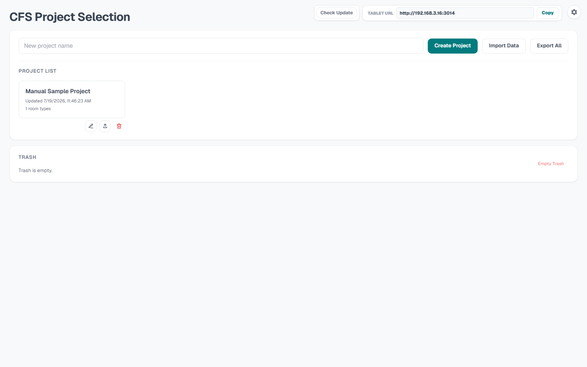
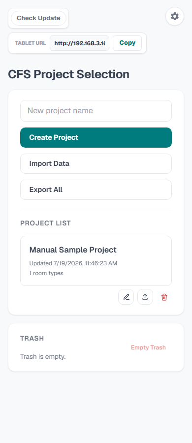
| 操作 | 説明 | 注意点 |
|---|---|---|
| New project name / Create Project | 新規プロジェクトを作成します。 | 同名プロジェクトは作れません。案件名が分かる名前にします。 |
| Import Data | JSONまたはqjsonを読み込みます。 | 同じIDのプロジェクトがある場合、更新またはコピー扱いの確認が出ます。 |
| Export All | 全プロジェクトをバックアップします。 | PC移行、更新前、Trash削除前に実行します。 |
| Project card | 対象プロジェクトを開きます。 | 更新日時、最後に保存した人、Room Type数を確認できます。 |
| Rename Project | プロジェクト名を変更します。 | 共有環境では編集権限が必要です。 |
| Export Project | 選択したプロジェクトだけをJSON出力します。 | 他PCへ1案件だけ渡すときに使います。 |
| Delete Project | Trashへ移動します。 | 即時完全削除ではありません。 |
| Trash / Restore | 削除済みProjectまたはRoom Typeを戻します。 | 復元先の重複名に注意します。 |
| Empty Trash | Trash内を完全削除します。 | 実行前にExport Allを推奨します。 |
| App Update | Git clone版の更新確認と適用です。 | 共通Zip単体にはGitメタデータがないため直接更新できません。CFSのViewer、Editor、Admin権限には依存しません。 |
| Tablet URL / Copy | 同じネットワーク内のタブレット用URLを表示、コピーします。 | PC側CFSが起動中である必要があります。 |
| User / Sign in / Manage Users | ローカル表示名登録、Microsoftサインイン、ユーザー管理を行います。 | Supabase共有時の編集権限はRoleで決まります。 |
6. 共通設定
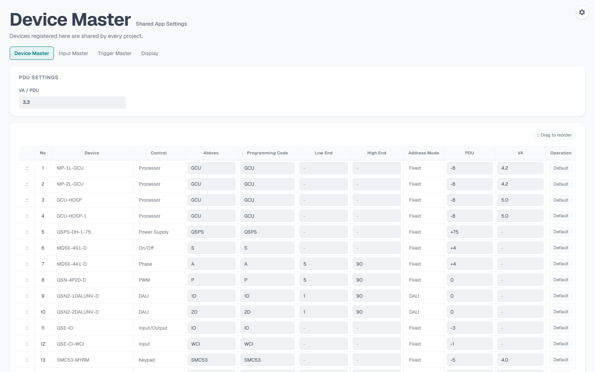
右上またはProject Selectionの歯車から共通設定を開きます。ここでの設定はプロジェクト個別ではなく、ブラウザーまたはアプリ環境単位の共通設定です。
Device Master
| 列 | 意味 | 使い方 |
|---|---|---|
| Device | 機器モデル名です。 | Device Assign、PDU、Switch/PIR/QSM作成の基準になります。 |
| Control | On/Off、Phase、PWM、DALI、Input/Output、Input、TSTAT、Processor、Power Supply、Sensor、Keypad、Remoteなど。 | CFS表示、PDU集計、選択候補の分類に使います。 |
| Abbrev. | 短縮記号です。 | CFSのProgramming Codeの基準になります。 |
| Programming Code | CFS上のプログラム名に使うコードです。 | 必要に応じて短く一貫した値にします。 |
| Low End / High End | 調光範囲です。 | Phase、DALIなどの調光範囲確認に使います。 |
| Address Mode | FixedまたはDALIです。 | DALI機器はDALIのアドレス展開に使います。 |
| PDU | 供給はプラス、消費はマイナス、対象外は0です。 | PDUタブのTotal PDUに反映されます。 |
| VA | 直接VA/W値がある場合に入力します。 | 空欄の場合はPDU値とVA/PDUから計算します。 |
| Operation | DefaultまたはDeleteです。 | Default機器は削除できません。追加した機器は削除できます。 |
PDU Settings
VA / PDU はPDUをVAへ換算する値です。共通版では 3.3 を標準値とします。
Input Master
Door Magnet、Window Magnetなど、Device AssignのCCI/Inputで使う入力名を管理します。行追加、削除、ドラッグ並べ替えができます。
Trigger Master
Less 4 Second、Less 10 Second、Press、Long Pressなど、Switch、Command、Room SceneのTrigger Condition候補を管理します。
Display
| 設定 | 内容 |
|---|---|
| Display Size | 作業領域とコントロールの表示倍率を0.5から1.5の範囲で調整します。50%、60%、70%、100%のプリセットとResetがあります。 |
| Admin Mode | CFS診断用の高度な表示を有効化します。 |
| CFS Linked Values fill | Admin Mode時に、CFS上で連動元があるFunctionセルを強調します。 |
| CFS Link Map | Admin Mode時に、CFSタブのLink Mapボタンと診断パネルを表示します。 |
7. Project画面共通操作
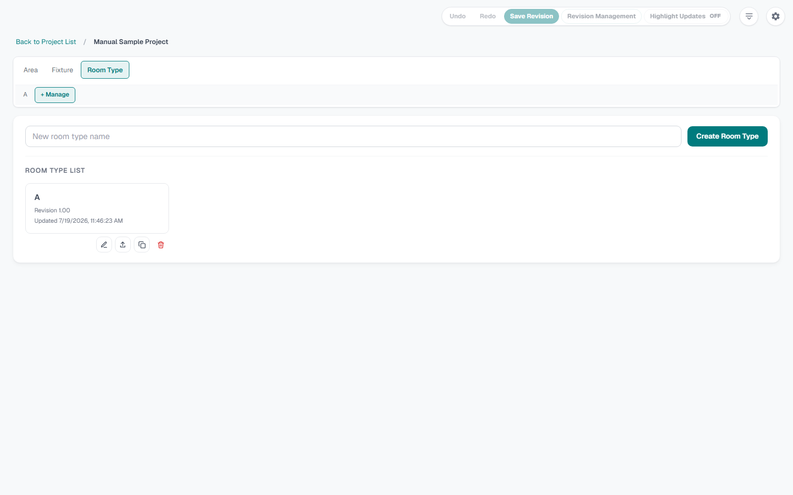
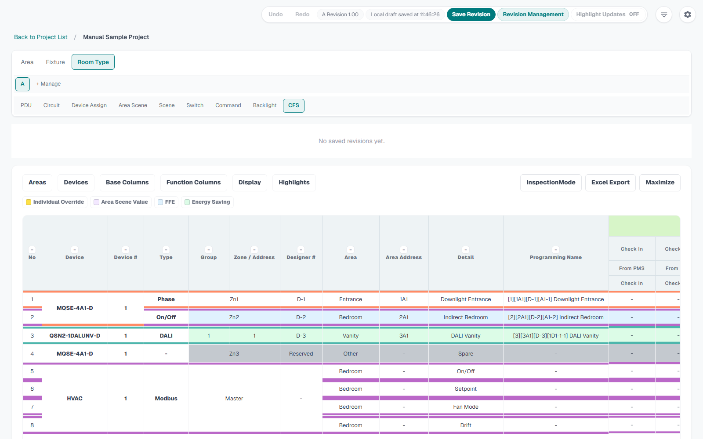
| 領域 | 機能 | 説明 |
|---|---|---|
| 上部履歴 | Undo / Redo | 現在の編集セッション内で戻す、やり直す操作です。Ctrl/Cmd+Z、Ctrl+Y、Ctrl/Cmd+Shift+Zにも対応します。 |
| Revision | Save Revision | 現在のRoom Type状態を新しいRevisionとして保存します。保存時に任意のNoteを入力でき、自動Update Memoと一緒に残ります。 |
| Revision | Revision Management | 保存済みRevision、保存日時、Note、Update Memoを表示し、Restoreで過去Revisionを読み込みます。 |
| Revision | Highlight Updates | 直近Revisionとの差分を各タブで強調します。2つ以上のRevisionがあると使えます。 |
| 表示 | Hide top bar / Show Top | 作業領域を広げるために上部UIを折りたたみます。 |
| 共同編集 | View Only / Edit / Finish | 共有環境で閲覧、編集開始、編集終了を切り替えます。 |
| 親タブ | Area / Fixture / Room Type | プロジェクト共通マスターとRoom Type作業領域を切り替えます。 |
| Room Typeタブ | 各Room Type / + Manage | Room Typeを選択します。+ ManageでRoom Type一覧と作成、複製、削除、Export、LD Exportを行います。 |
| 作業サブタブ | PDU、Circuit、Device Assign、Area Scene、Scene、Switch、Command、Backlight、CFS | Room Type内の各機能を切り替えます。差分があるタブはHighlight Updatesで強調されます。 |
8. AreaとFixture
Area
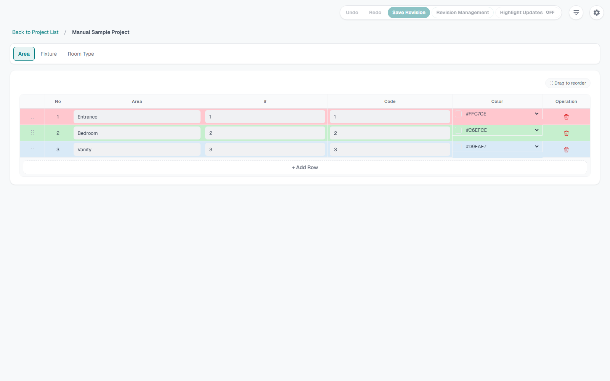
| 列 | 意味 | 入力例 |
|---|---|---|
| No | 表示順です。 | ドラッグで並べ替えます。 |
| Area | エリア名です。 | Entrance、Foyer、Bedroom、Vanityなど。 |
| # | エリア番号です。 | 1、2、3など。 |
| Code | CFSやProgramming Nameで使う短縮コードです。 | EN、FO、BEなど。 |
| Operation | 削除操作です。 | 使用中のAreaを削除すると参照が外れるため、CFS確認前に整理します。 |
Fixture
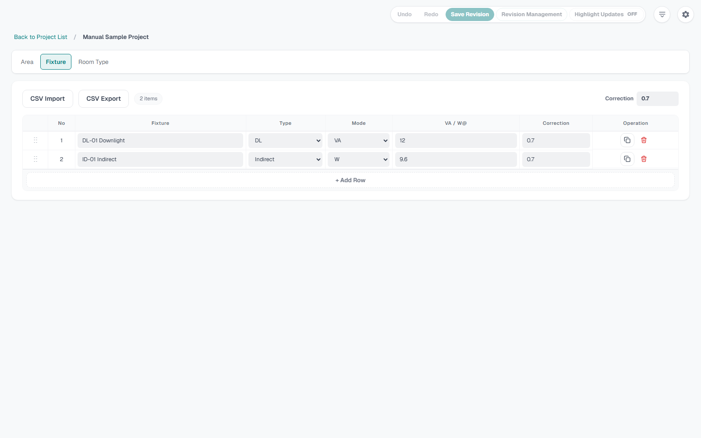
| 列または操作 | 意味 | 注意点 |
|---|---|---|
| Import CSV | FixtureマスターをCSVから読み込みます。 | 5MB以下のCSVを使います。 |
| Export CSV | 登録済みFixtureをCSV出力します。 | 他案件のひな形にできます。 |
| Default PF | 力率の初期値です。 | 標準は0.7です。FixtureごとのVA計算に影響します。 |
| Fixture | 器具名、型番、略称です。 | UL4M-Wなど。 |
| Type | DLまたはIndirectです。 | CFS表示と数量解釈に影響します。 |
| Mode | VAまたはWです。 | Wの場合は力率からVA換算します。 |
| VA / W@ | 単位消費電力です。 | PDUとTotal VA計算にも使います。 |
| Copy / Delete | Fixture行を複製または削除します。 | 既にCircuitで使っているFixture名を削除する前に参照を確認します。 |
9. Room Type管理
Room Type は実部屋番号ではなく、同じ仕様を共有する客室タイプや部屋タイプの単位です。
| 操作 | 説明 | 用途 |
|---|---|---|
| New room type name / Create Room Type | 新しいRoom Typeを作ります。 | 例: ST-A、Twin、Suiteなど。 |
| Room Typeカード | Room Typeを開きます。 | 開くとPDU、Circuitなどのサブタブが表示されます。 |
| Rename Room Type | Room Type名を変更します。 | Export名やRevision表示にも関係します。 |
| Export Room Type | Room Type単位でJSON出力します。 | 別プロジェクトへ同じRoom Typeを渡すときに使います。 |
| LD Export | Lutron Designer連携用JSONを作ります。 | Room Type情報をLD側へ渡すための中間出力です。 |
| Copy Room Type | Room Typeを複製します。 | 類似タイプを作るときに使います。 |
| Delete Room Type | Trashへ移動します。 | ProjectごとではなくRoom Typeだけ削除できます。 |
10. PDU
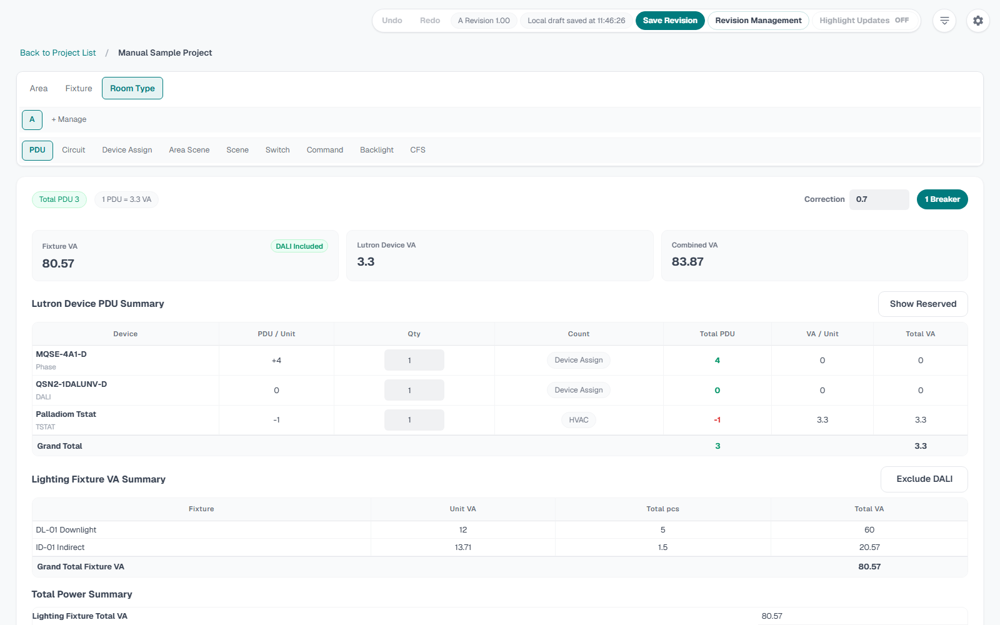
PDUタブは、Lutron機器のPDU収支、照明器具VA、合計VA、必要ブレーカー数を確認するためのタブです。現行UIではRoom Typeの最初のサブタブにあります。
| 領域 | 機能 | 説明 |
|---|---|---|
| 上部KPI | Total PDU、1 PDU、Breaker | PDU収支、換算値、必要ブレーカー数を表示します。 |
| Correction | Fixtureの共通力率を調整します。 | Fixture VA計算に影響します。 |
| Lutron Device PDU Summary | Device、PDU / Unit、Qty、Count、Total PDU、VA / Unit、Total VAを表示します。 | Qtyを変更すると、機器種別に応じてDevice Assign、HVAC、Switch、手動数量へ反映します。 |
| Show Reserved / Hide Reserved | 数量0のPDU機器を表示または非表示にします。 | 未使用機器の確認に使います。 |
| Lighting Fixture VA Summary | FixtureごとのUnit VA、Total pcs、Total VAを表示します。 | CircuitのFixtureとpcsから集計します。 |
| Exclude DALI / Show DALI | DALI Fixtureを照明VA計算から除外または含めます。 | 見積条件や電源計算条件に合わせます。 |
| Total Power Summary | Lighting Fixture Total VA、Lutron Device Total VA、Combined Total VA、Breaker Rating、Breakers Requiredを表示します。 | 100V、20Aブレーカー換算で必要数を確認します。 |
11. Circuit
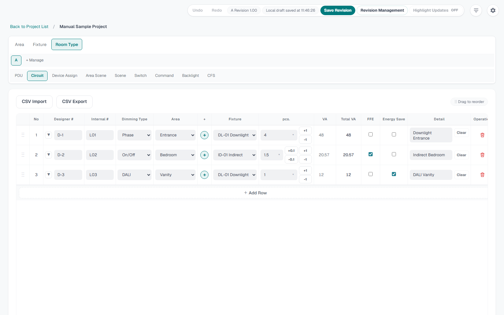
| 列または操作 | 説明 | CFSへの影響 |
|---|---|---|
| Import CSV / Export CSV | Circuit行をCSVで読み込み、出力します。 | 外部表から取り込む場合に使います。 |
| Designer # | 設計図やDesigner上の回路番号です。 | Device AssignのDesigner#候補になります。 |
| Internal # | 内部管理番号です。 | Device AssignでInternal#表示へ切り替えたときの候補になります。 |
| Dimming Type | On/Off、Phase、PWM、DALIを選びます。 | Device Assignで選べる機器、Scene値入力方法、CFS表示が変わります。 |
| Area | Areaマスターから選びます。 | Area Scene、CFSのエリア行、Area Highlightに影響します。 |
| + under same Designer | 同じDesigner #の下に行を追加します。 | 複数Fixtureや複数Detailを同一Designer #へまとめるときに使います。 |
| Fixture | Fixtureマスターから選びます。 | Fixture Type、VA、PDU集計に影響します。 |
| pcs. | 器具数量です。 | DLなどは整数、Indirectなどは小数入力も使います。 |
| VA / Total VA | Fixtureから自動計算します。 | PDUタブと電源計算に反映します。 |
| FFE | FFE対象回路を示します。 | CFSのHighlightで強調できます。 |
| Energy Save | 省エネ対象回路を示します。 | CFSのHighlightで強調できます。 |
| Detail | 回路の説明です。 | CFSのDetail行に表示されます。 |
| Delete Circuit | Circuit行を削除します。 | Scene、Device Assign、CFS参照に影響するため削除後にLink Mapを確認します。 |
12. Device AssignとHVAC
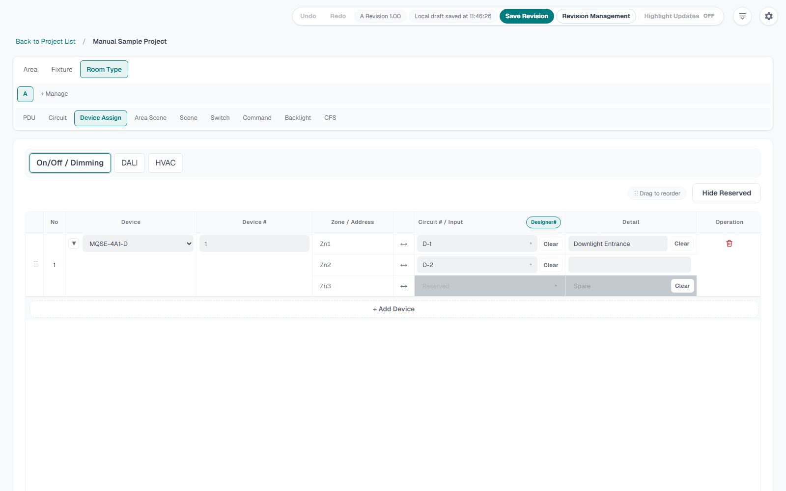
On/Off / Dimming
Fixed機器のZone / AddressへCircuitを割り当てます。Device、Device #、Zone / Address、Circuit # / Input、Detail、Operationを管理します。Device選択時、機器マスターのAddress定義に従って必要なZone行が展開されます。
DALI
DALI機器ではLINE、Group、Addressが表示されます。DALIアドレスは64アドレス単位でLINEが分かれます。DALI機器にはDALI回路だけを割り当てます。重複アドレスがある場合はDuplicate DALI Addressに表示されます。
HVAC
HVACではProtocol、Master / Slave、Area、Low End、High End、Summer/Winter、Detailを登録します。季節設定ではSeason名、Start Date、End Dateを管理します。
| 操作 | 説明 |
|---|---|
| Device mode | On/Off / Dimming、DALI、HVACを切り替えます。 |
| Show Reserved / Hide Reserved | Reservedまたは空割当を表示または非表示にします。 |
| Designer# / Internal# | Circuit # / Input列の候補表示を切り替えます。 |
| Clear | Circuit割当、Input割当、Detailを消します。 |
| Swap handle | 同じ機器内のZoneやDALI GroupのCircuit / Detailを入れ替えます。 |
| Collapse / Expand | 展開行の多い機器を折りたたみ、表示を整理します。 |
| + Add Device | 機器選択モーダルを開き、選んだ機器を追加します。 |
| Delete Device / Delete Assignment | 機器グループまたは単独割当を削除します。 |
13. Area Scene
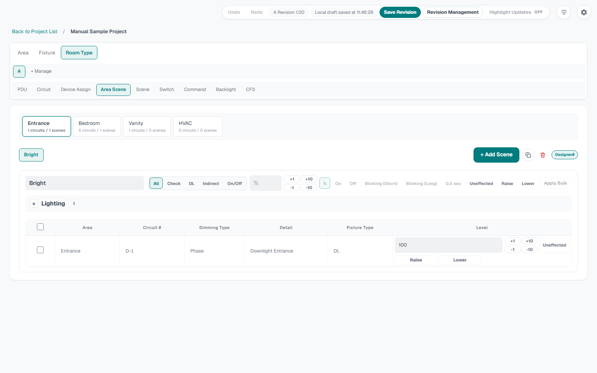
Area Sceneは、Area単位の基本シーン値です。SceneタブやSwitchタブから選択され、CFSの連動値になります。ただし、Area Sceneを選択してもIndividual Overrideへ値は自動コピーされません。個別上書きが必要なときだけOverrideを入力します。
| 操作 | 説明 |
|---|---|
| Area chip | 編集するAreaを選びます。HVAC対象がある場合はHVAC用の対象も表示されます。 |
| Scene tab | Area内のSceneを選びます。ドラッグで並べ替えできます。 |
| + Add Scene | 選択中Areaに新しいSceneを追加します。 |
| Copy Scene / Delete Scene | Sceneを複製または削除します。 |
| Scene name | Area Scene名を入力します。 |
| Bulk target | 対象Circuitをチェックし、一括設定対象にします。 |
| Bulk value | パーセント、On、Off、Blinking、0.5 sec、Raise、Lower、Uneffectedを一括反映します。 |
| Level | 各Circuitの値を個別に入力します。調光は0から100、On/Off系はOn、Off、Blinking (Short)、Blinking (Long)、0.5 sec、Uneffectedを使います。 |
| HVAC Setting | HVAC対象の値を設定します。季節対象がある場合は季節別に反映できます。 |
14. Scene
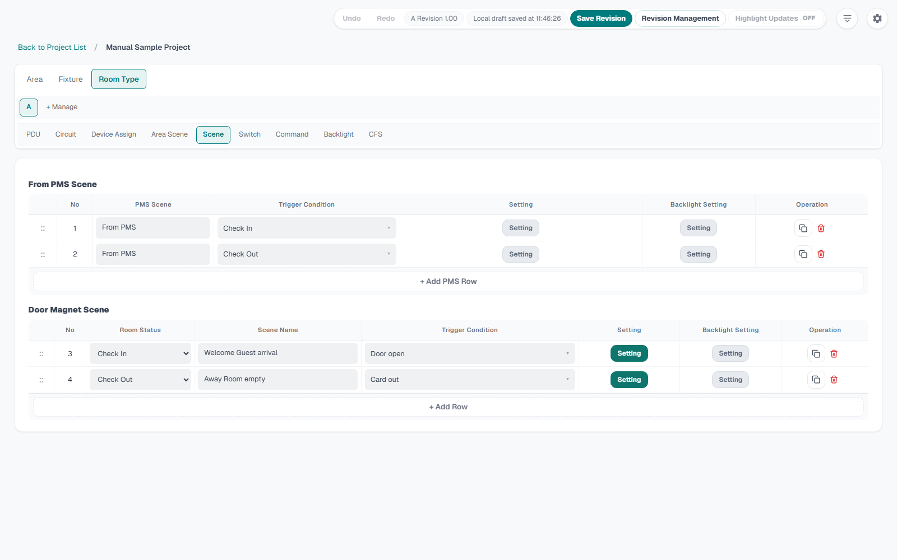
SceneタブはRoom Sceneを作る場所です。From PMS Sceneと通常Sceneに分かれます。Settingを開くと、Area Scene選択、Individual Override、HVAC Settingを編集できます。Backlight SettingではRoom Sceneに連動するBacklight条件を設定できます。
| 列または操作 | 説明 |
|---|---|
| From PMS Scene | PMS由来のCheck In、Check Outなどのシーンを管理します。CFS上ではFrom PMS、Check In/Check Out、Trigger Conditionの順に表示します。 |
| + Add PMS Row | From PMS Sceneを追加します。 |
| Room Status | Check InまたはCheck Outを選びます。 |
| Scene Name | Occupied Scene、Unoccupied Scene、Welcome Sceneなどを入力します。 |
| Trigger Condition | Trigger Master候補から選択、または直接入力します。 |
| Setting | Area Scene選択とIndividual Overrideを設定します。 |
| Backlight Setting | Backlight条件とPalladiom By Scene対象を設定します。 |
| Copy Scene / Delete Scene | Room Sceneを複製または削除します。 |
| Setting overlay | SettingまたはCopy後に開く編集パネルです。Closeで閉じます。 |
15. Switch、PIR、QSM
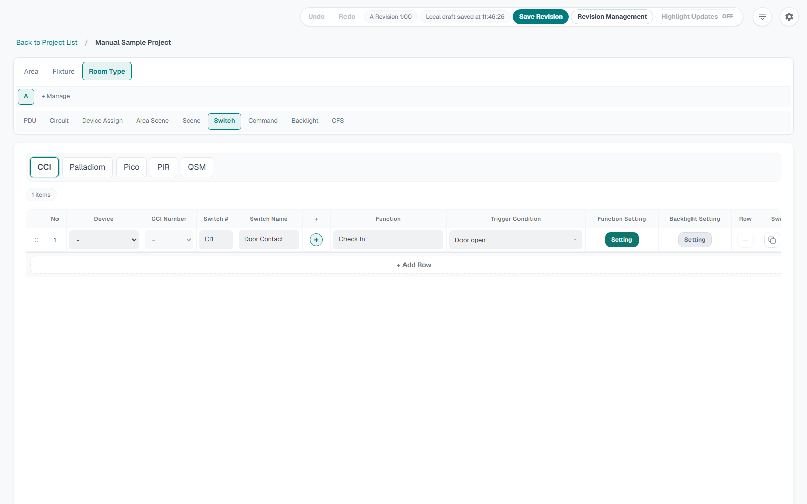
SwitchタブではCCI、Palladiom、Pico、PIR、QSMを切り替えて管理します。Commandは別タブです。
| 種別 | 主な列 | 説明 |
|---|---|---|
| CCI | Device、CCI Number、Switch #、Switch Name、Function、Trigger Condition、Function Setting、Backlight Setting | Input機器のCCIをスイッチ動作として設定します。 |
| Palladiom | Switch #、Switch Name、Buttons、Button、Function、Trigger Condition、Function Setting、Backlight Setting | Palladiomキーパッドのボタン構成、シーン、Backlightを設定します。 |
| Pico | Switch #、Switch Name、Buttons、Button、Function、Trigger Condition、Function Setting | Picoリモコンのボタン割当を設定します。 |
| PIR | PIR、Location、Trigger Condition、Function Setting | Area別のPIR数量を登録し、QSMへ割り当てます。 |
| QSM | QSM、Assigned PIR、Operation | PIRをQSMへ1対1で割り当てます。別QSMを選ぶと移動します。 |
Function Setting
Area Scene欄ではAreaごとにSceneを選びます。Individual Override欄ではCircuitまたはHVAC対象へ直接値を入れます。値はArea SceneとOverrideを混在できます。Overrideを消す場合はClearを使います。
Backlight Setting
Palladiom系ではBacklight対象、条件、Backlight Sceneを指定できます。By Scene対象にしたPalladiomはBacklight Logicの出力対象になります。
行操作
| 操作 | 説明 |
|---|---|
| + Add Row | 現在の種別で行を追加します。 |
| +列 | PalladiomやPicoの同一ボタン内にFunction行を追加します。 |
| Rowのマイナス | Function行だけを削除します。最後の行はSwitch削除を使います。 |
| Copy Switch | Switchグループ全体を複製します。 |
| Delete Switch | Switch、CCI、Palladiom、Pico、PIRグループ全体を削除します。 |
| Drag handle | Switchグループまたは行の表示順を変更します。 |
16. Command
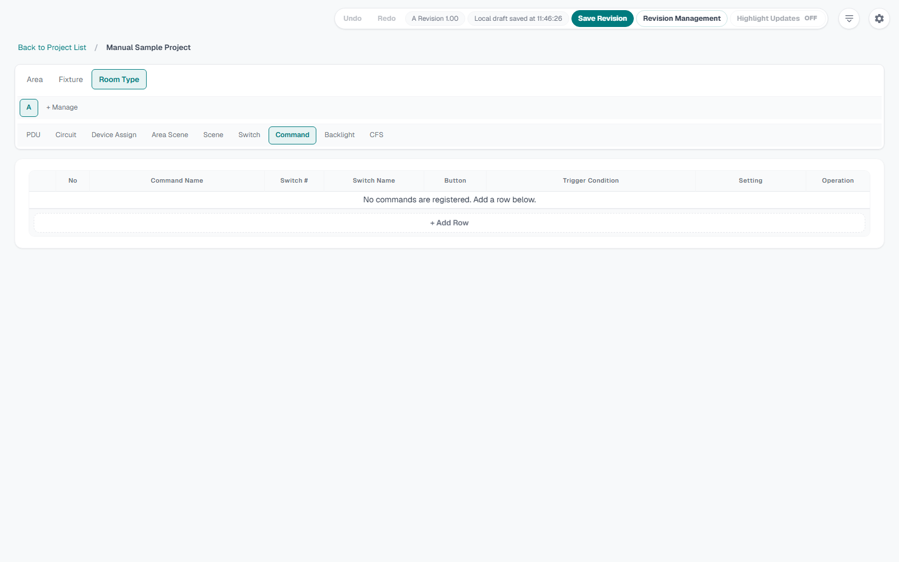
Commandタブは、Switch上のボタンを参照して別の命令としてCFSに出すための設定です。Command Name、Switch #、Switch Name、Button、Trigger Condition、Setting、Operationを管理します。
| 列または操作 | 説明 |
|---|---|
| Command Name | All Off、Scene Commandなどの命令名を入力します。 |
| Switch # | 登録済みSwitchの番号を選びます。 |
| Switch Name | 選択したSwitch名が表示されます。 |
| Button | 対象Switchのボタンを選びます。CCIの場合はボタンなしです。 |
| Trigger Condition | Trigger Master候補から選びます。 |
| Setting | Area Scene選択、Individual Override、HVAC Settingを設定します。 |
| Copy Command / Delete Command | Command行を複製または削除します。 |
| + Add Row | Command行を追加します。 |
17. Backlight
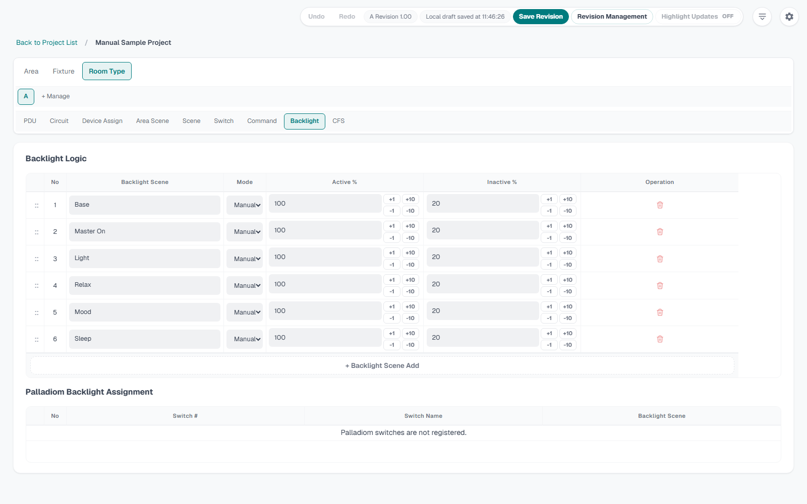
Backlightタブは、Backlight SceneとPalladiom Backlight Assignmentを管理します。
| 領域 | 列 | 説明 |
|---|---|---|
| Backlight Scene | No、Backlight Scene、Mode、Active %、Inactive %、Operation | Base、Master On、Light、Relax、Mood、SleepなどのSceneごとにManualまたはDBM、Active/Inactive値を設定します。 |
| Backlight Scene | +1、+10、-1、-10 | ActiveまたはInactiveの値を段階的に変更します。 |
| Backlight Scene | + Add Row / Delete Backlight Scene | Backlight Sceneを追加または削除します。標準行の削除には注意します。 |
| Palladiom Backlight Assignment | Switch #、Switch Name、Backlight Scene | PalladiomごとのBacklight Sceneを選びます。By Sceneを選ぶとSceneやSwitch側の条件からCFSへ反映されます。 |
18. CFS確認
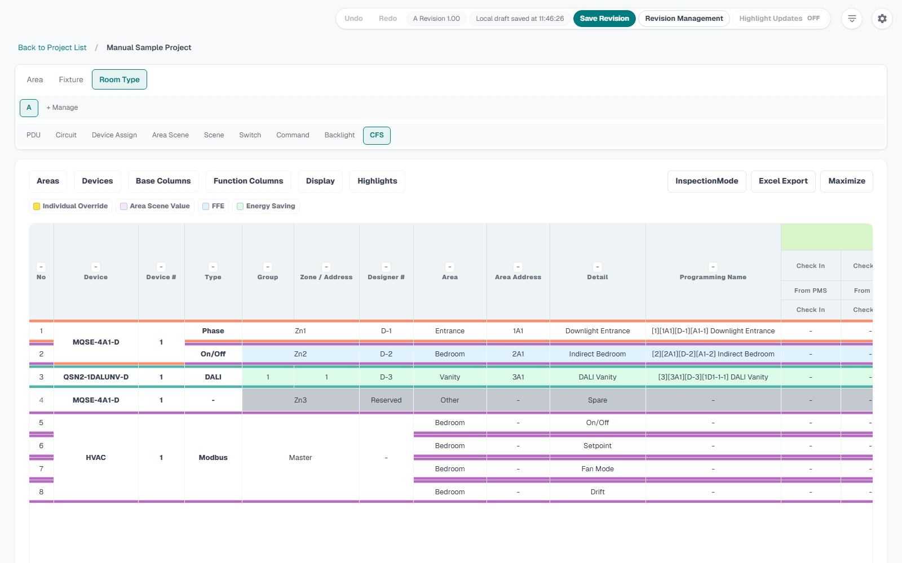
CFSタブは最終確認、検査、出力の中心です。上部メニューで表示対象、列、Highlight、InspectionMode、Link Map、Excel Exportを操作します。
| 操作 | 内容 |
|---|---|
| Base | Device、Device Num.、Control、Fixture、pcs、W、Low End、High End、Area、Note、Designer Number、Group、No、Address/Zoneなどの基本列を表示または非表示にします。列の順番が追いやすいよう、メニューは1列表示です。非表示にしたBase列はこのメニューから再表示します。 |
| Function | Switch、Command、BacklightなどのFunction列を表示または非表示にします。 |
| Device | 表示するDevice行を選びます。不要な機器を一時的に隠せます。CCI行は通常非表示で、DeviceメニューのShow CCI / Hide CCIで一時表示を切り替えます。 |
| Area | 表示するAreaを選びます。Show all、Hide all、個別チェックがあります。 |
| Display | Area Scene Name、Area Scene Valueなどの表示を切り替えます。 |
| Programming Name | Programming Nameの組み合わせ、括弧、区切り記号、プレビューを設定します。 |
| Highlights | Area Color、Individual Override、Area Scene Value、Inspection Marks、Linked Values、FFE、Energy Savingを切り替えます。 |
| InspectionMode | CFS上で検査用のドラフト編集を行います。詳細は次章です。 |
| Link Map | Admin ModeかつCFS Link Map有効時に、リンク概要、Current Links、All Rules、Warningsを確認できます。 |
| Excel Export | 現在表示しているCFS表をExcelへ出力します。 |
Link Mapで確認すること
- Area Scene、Room Scene、Switch、Command、Backlight、HVACの参照先が存在すること。
- missing_area_scene、missing_switch_scene、missing_backlight_target、duplicate_switch_columnなどのWarningsがないこと。
- stale_hvac_targetが出た場合、Repair可能か確認し、修復後にCFS値を再確認すること。
19. InspectionMode
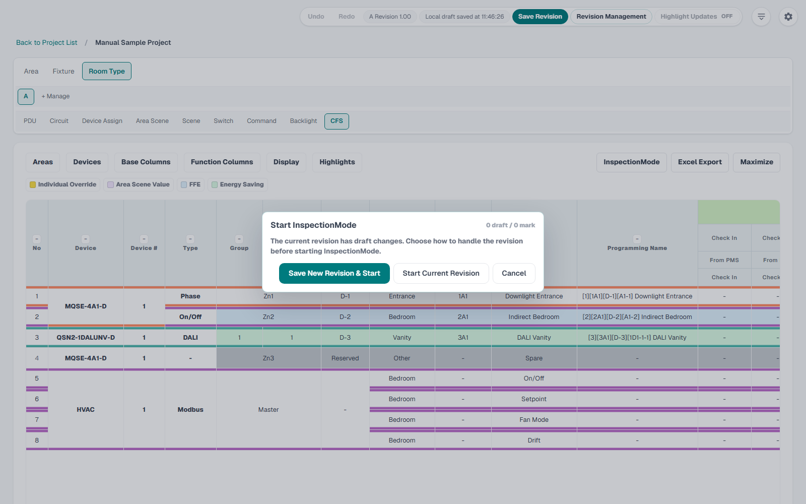
InspectionModeは、現地確認や最終検査でCFSセルを見ながら差分を作るためのモードです。開始時と終了時にRevisionの扱いを確認します。
- CFSタブで InspectionMode を押します。
- 開始ダイアログで Save New Revision & Start または Start Current Revision を選びます。Draft差分がある場合は、保存してから開始するかを確認します。
- Linkedを選ぶと、リンク元のArea Scene値を編集します。Unlinkを選ぶと、選択したCFSセルをIndividual Overrideとして編集します。
- セルをクリックし、表示される編集パネルで値を変えます。調光値は0%、100%、-10、-1、+1、+10、On/Off系はOn、Off、Blinking (Short)、Blinking (Long)、0.5 sec、Raise、Lower、Uneffectedを扱えます。
- Selectでセルまたは範囲を選択し、Copy、Target、Pasteで範囲貼り付けできます。Clearで選択とコピーを解除します。
- RevertはInspectionMode全体を開始時の値へ戻し、InspectionModeを終了します。
- 終了時は Finish InspectionMode ダイアログでRevision保存の扱いを選びます。開始時に新Revision保存済みの場合はCurrent Revision終了のみになります。
| 機能 | 説明 |
|---|---|
| Inspection Marks | InspectionModeで変更したセルを記録するマークです。終了後にHighlightで表示できます。 |
| Reset | セル編集パネル内で、そのセルだけを開始時の値へ戻します。 |
| OK | セル編集パネルの値をドラフトとして確定します。 |
| Linked Values | Admin Modeで有効にした場合、リンク元を持つセルを強調します。 |
20. Export、Share、LD Export
| 出力 | 場所 | 内容 |
|---|---|---|
| Export All | Project Selection | 全プロジェクトをJSON出力します。バックアップ、PC移行、更新前保存に使います。 |
| Export Project | Project SelectionのProjectカード | 1プロジェクトだけをJSON出力します。 |
| Export Room Type | Room Type管理 | 選択Room Typeを共有用に出力します。 |
| LD Export | Room Type管理 | Lutron Designer連携用JSONを出力します。Summary、Warnings、JSONを確認してからCopy JSONまたはDownload JSONします。 |
| CFS Excel Export | CFSタブ | 現在の表示、フィルター、列選択を反映したExcelを出力します。 |
| Fixture CSV | Fixtureタブ | FixtureマスターをCSVで入出力します。 |
| Circuit CSV | Circuitタブ | Circuit行をCSVで入出力します。 |
21. 更新とバックアップ
| 場面 | 手順 |
|---|---|
| 日常バックアップ | Project SelectionでExport Allを実行し、日付付きで保管します。 |
| 別PCへ移す | 元PCでExport ProjectまたはExport All、受け取りPCでImport Dataを実行します。 |
| 共通Zipを更新する | 新しいZipを展開し、既存データはImportで移します。Zip配布物に直接 data を上書きコピーしないでください。 |
| Git環境の半自動更新 | GitHubなどからGit cloneしたCFSではApp Updateを使います。ローカル変更、履歴分岐、upstream未設定がある場合は自動更新を止めます。 |
| Supabase共有環境 | App UpdateはCFSアカウント権限とは別です。同じPCでCFSを起動でき、GitHub repositoryを読み取れ、アプリフォルダーへ書き込める場合に適用できます。 |
22. トラブル対応
| 症状 | 確認 | 対応 |
|---|---|---|
| 起動しない | artifacts\startup\latest-status.txt と最新 start-*.log | メッセージを確認します。初回ビルド中なら完了を待ちます。 |
| ブラウザーが開かない | http://localhost:3014 | 手動でURLを開きます。ポート使用中なら既存CFSを終了します。 |
| 編集できない | View Only、Role、他ユーザーのEditing表示 | EditorまたはAdminでStart Editingします。他ユーザーが編集中ならWaitします。 |
| Microsoftサインインできない | メール、Entraテナント、Supabase Azure provider、リダイレクトURL | Adminにユーザー登録と設定を確認してもらいます。 |
| ユーザー権限を変えられない | 自分がAdminか、最後のAdminを無効化しようとしていないか | 別の有効Adminを先に追加してから変更します。 |
| CFS値が出ない | Area、Circuit、Device Assign、Area Scene、Scene、Switch、Command、Backlight | Link MapのWarningsと参照元タブを確認します。 |
| Area Scene Nameが期待通りでない | CFSのDisplay設定、Area Scene選択、Individual Override | DisplayでArea Scene Name表示を確認し、SceneまたはSwitchのArea Scene選択を確認します。 |
| 一括設定が反映されない | Bulk targetのチェック、対象がOn/Off系か調光系か、Apply操作 | 対象回路を選び、値またはモードを選択してApplyします。 |
| PDUがマイナス | PDUタブのTotal PDU | Power Supply追加、機器数量見直し、Device MasterのPDU値確認を行います。 |
| Exportが古い | Revision保存状態、表示フィルター、列非表示 | Save Revision後、表示条件を確認して再Exportします。 |
| Trashを戻したい | Trash内のProjectsまたはRoom Types | Restore ProjectまたはRestore Room Typeを使います。 |
23. 完成前チェックリスト
- Project名とRoom Type名が正しい。
- Area名、番号、Codeに抜けと重複がない。
- FixtureのVA/W、Type、力率が正しい。
- PDUのTotal PDUが0以上で、Combined VAとBreaker数を確認した。
- CircuitのDesigner #、Internal #、Dimming Type、Area、Fixture、pcs、Detailが入っている。
- Device AssignでReservedのまま残してよい箇所と割当済み箇所を確認した。
- DALIのLINE、Group、Addressに意図しない重複がない。
- HVACのProtocol、Master / Slave、Area、季節設定が正しい。
- Area Sceneの値と名前が入力されている。
- SceneのRoom Status、Scene Name、Trigger Condition、Area Scene選択、Overrideが正しい。
- Switch、PIR、QSM、CommandのFunction SettingとBacklight Settingが正しい。
- Backlight Scene、By Scene、Active / Inactive値が正しい。
- CFSのAreas、Devices、Base Columns、Function Columns、Display、Highlightsを確認した。
- Link MapのErrorsとWarningsを確認し、必要な修復を済ませた。
- InspectionModeを使った場合、終了時にRevision保存し、Inspection Marksを確認した。
- Save Revisionを実行し、Revision Managementに履歴が残っている。
- Excel Export、Project Export、必要に応じてLD Exportを実行した。
- 共有環境ではFinish Editingを行い、他ユーザーが編集できる状態に戻した。
Rev. 2026-07-19。CFS App共通パッケージ説明書。このHTMLは同じManualまたはdocs内のassetsフォルダーと一緒に開けます。